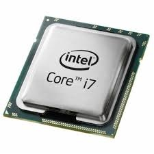
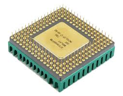

Processor (CPU)
What is a CPU?
A central processing unit (CPU) is the electronic circuitry within a computer that carries out the instructions of a computer program by performing the basic arithmetic, logical, control and input/output (I/O) operations specified by the instructions. The computer industry has used the term "central processing unit" at least since the early 1960s. Traditionally, the term "CPU" refers to a processor, more specifically to its processing unit and control unit (CU), distinguishing these core elements of a computer from external components such as main memory and I/O circuitry
The form, design, and implementation of CPUs have changed over the course of their history, but their fundamental operation remains almost unchanged. Principal components of a CPU include the arithmetic logic unit (ALU) that performs arithmetic and logic operations, processor registers that supply operands to the ALU and store the results of ALU operations and a control unit that orchestrates the fetching (from memory) and execution of instructions by directing the coordinated operations of the ALU, registers and other components.
Most modern CPUs are microprocessors, meaning they are contained on a single integrated circuit (IC) chip. An IC that contains a CPU may also contain memory, peripheral interfaces, and other components of a computer; such integrated devices are variously called microcontrollers or systems on a chip (SoC). Some computers employ a multi-core processor, which is a single chip containing two or more CPUs called "cores"; in that context, one can speak of such single chips as "sockets".
Array processors or vector processors have multiple processors that operate in parallel, with no unit considered central. There also exists the concept of virtual CPUs which are an abstraction of dynamical aggregated computational resources.
 
History of the Cpu
Early computers such as the ENIAC had to be physically rewired to perform different tasks, which caused these machines to be called "fixed-program computers" Since the term "CPU" is generally defined as a device for software (computer program) execution, the earliest devices that could rightly be called CPUs came with the advent of the stored-program computer.
The idea of a stored-program computer had been already present in the design of J. Presper Eckert and John William Mauchly's ENIAC, but was initially omitted so that it could be finished sooner. On June 30, 1945, before ENIAC was made, mathematician John von Neumann distributed the paper entitled First Draft of a Report on the EDVAC. It was the outline of a stored-program computer that would eventually be completed in August 1949. EDVAC was designed to perform a certain number of instructions (or operations) of various types. Significantly, the programs written for EDVAC were to be stored in high-speed computer memory rather than specified by the physical wiring of the computer. This overcame a severe limitation of ENIAC, which was the considerable time and effort required to reconfigure the computer to perform a new task. With von Neumann's design, the program that EDVAC ran could be changed simply by changing the contents of the memory. EDVAC, however, was not the first stored-program computer; the Manchester Baby, a small-scale experimental stored-program computer, ran its first program on 21 June 1948 and the Manchester Mark 1 ran its first program during the night of 16–17 June 1949.